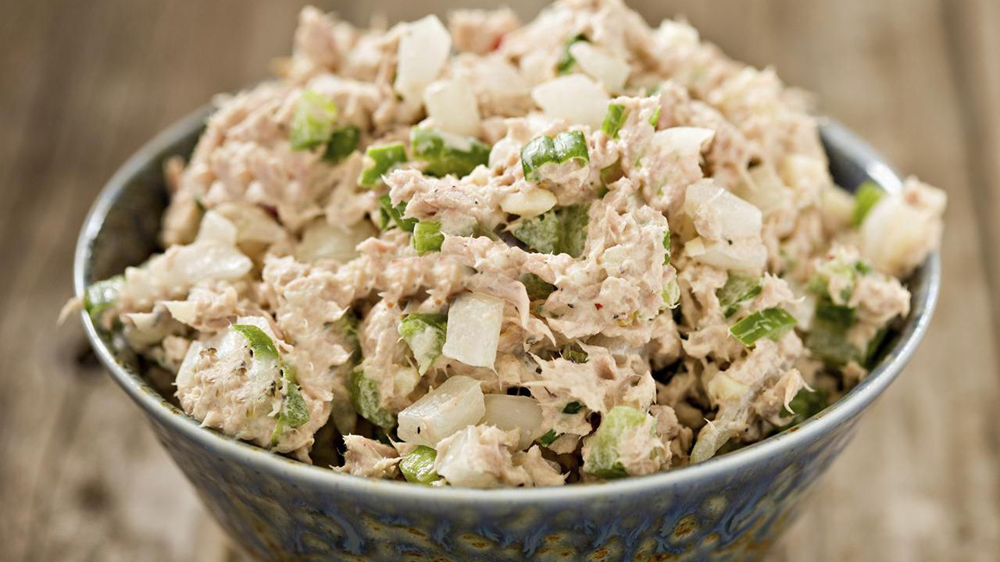

Tuna Salad Recipe

Homemade Tuna Salad
Tuna salad doesn't have to be complicated to be delicious. All of the ingredients for our recipe are simple and easy to use. This tasty dish can be prepared in as little as 5 to 10 minutes. This dish is high in protein and can be eaten by itself or as a filling for a sandwich or wrap!
Ingredients
- Tuna (2 cans)
- Mayonaise
- Dill Relish
- Salt
- Pepper
- Garlic Powder
- Onion Powder
Steps
- Drain both cans of tuna and add to large mixing bowl
- Add two heaping tablespoons of mayonaise or miracle whip if preferred
- Add two tablesppons of dill pickle relish
- Add a dash of salt, pepper, garlic and onion powder to the mix
- Stir all ingredients together until tuna salad is well mixed
- Refigerate or serve immediately